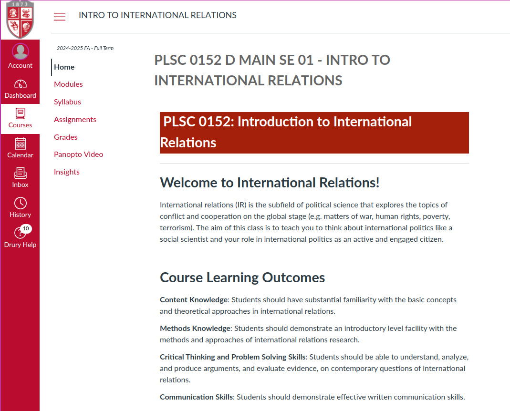
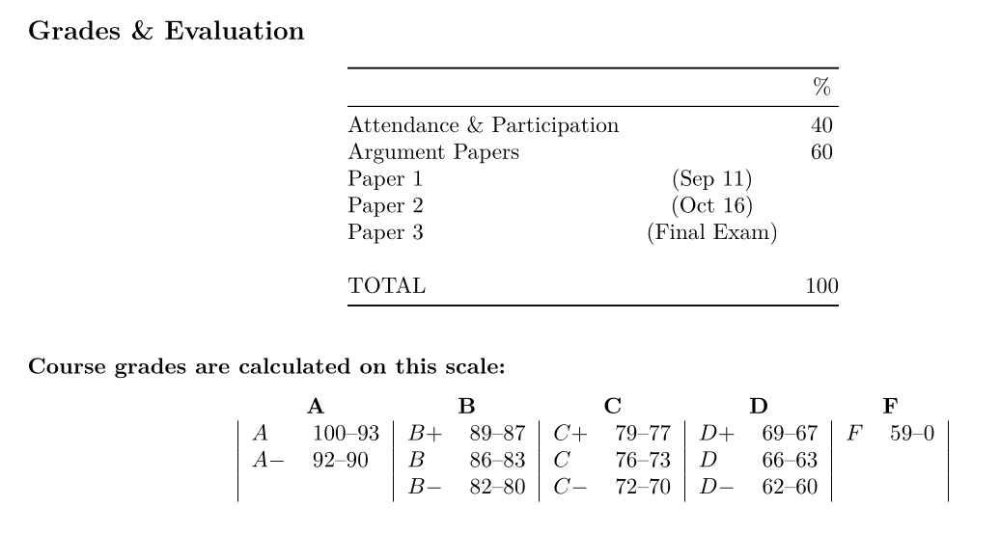
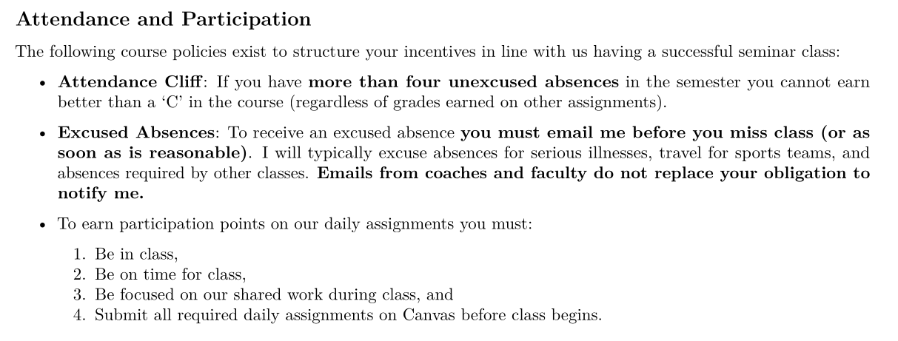

Intro to International Relations
Make a list of positive and negative things the US has done on the world stage in the last 10 years.
Justin Leinaweaver (Fall 2026)
Name
Year in school
Major
Primary source(s) of news
On balance, has the US been a net positive or negative influence on the world over the last 10 years?
Semester Outline: Section 1
Arguments, Evidence and International Relations
Making logical arguments,
Testing those arguments scientifically, and
Learning to think in terms of models
Semester Outline: Section 2
Why Are There Wars?
Semester Outline: Section 3
Why is it so Hard to Cooperate With Other Countries?
Semester Outline: Section 4
What is the Future of Transnational Politics and IR?
Semester Outline
Arguments, Evidence and International Relations
Why Are There Wars?
Why is it so Hard to Cooperate With Other Countries?
What is the Future of Transnational Politics and IR?
All Supporting Material is on Canvas

The answer is in the syllabus (part 1)
Learning Outcomes
LO 1: The big ideas and basic definitions of the field
LO 2 & 3: To use the tools of social scientists
LO 4: To write convincing arguments
The answer is in the syllabus (part 2)

The answer is in the syllabus (part 3)

The answer is in the syllabus (part 4)

This Course is Training for your Brain